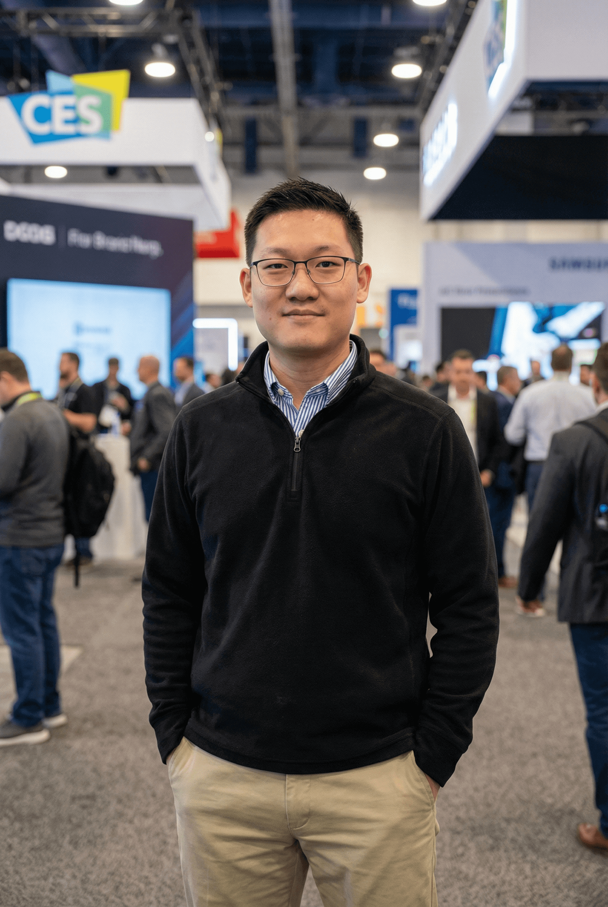
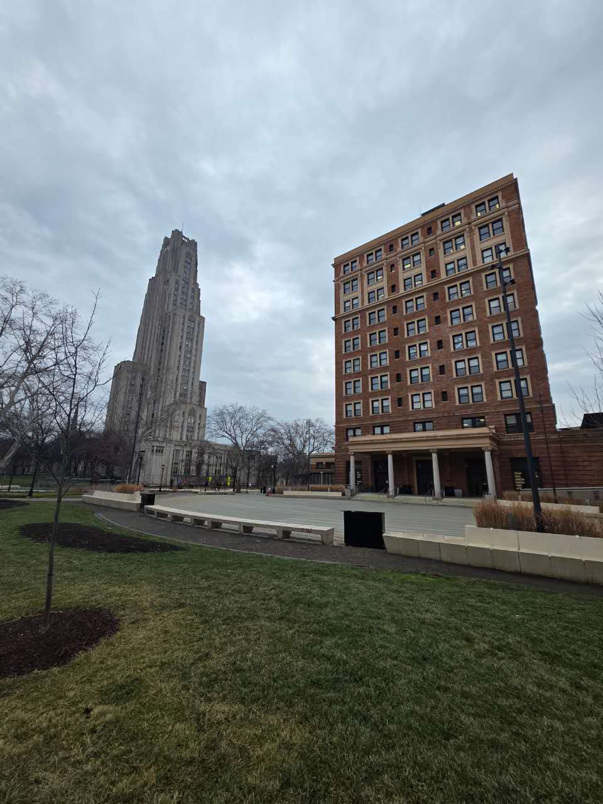
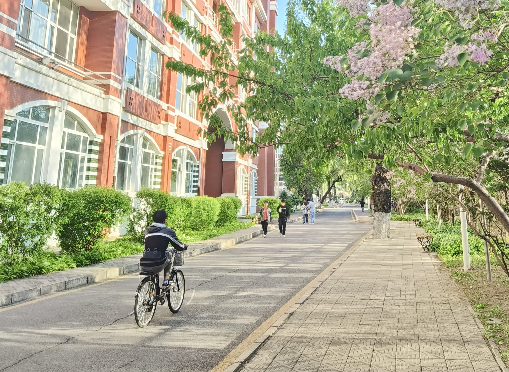
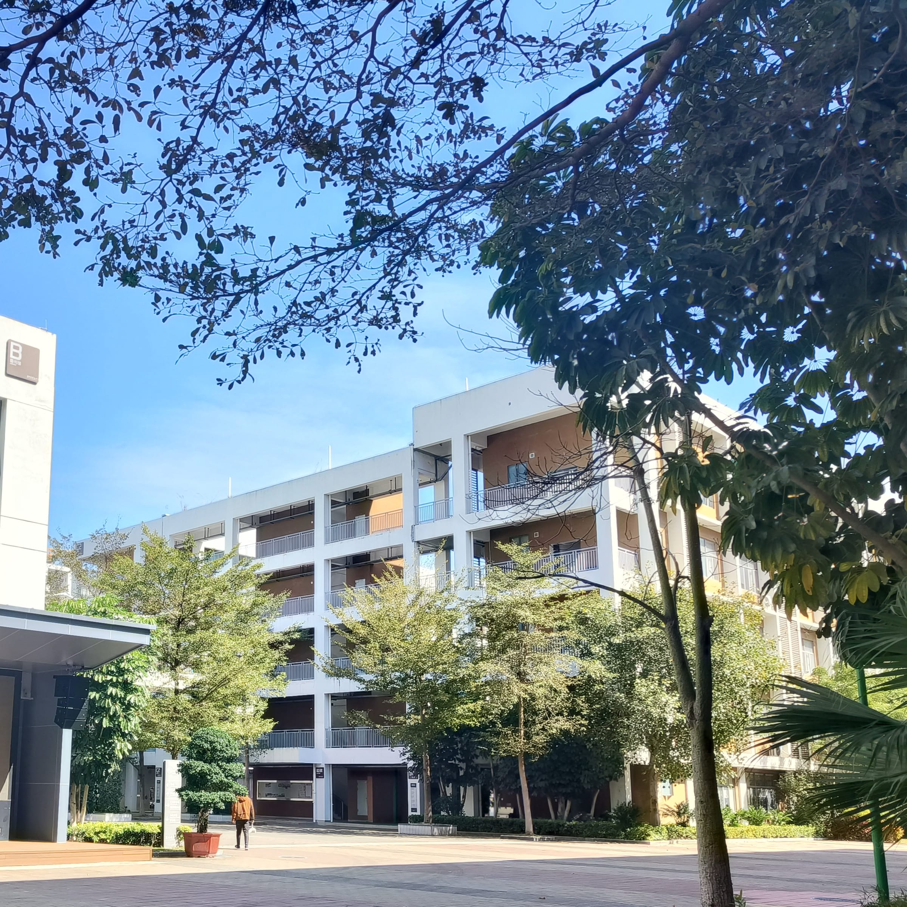

Leo(Wenzhuo) Zhao
M.S. Student in ECE @ University of Pittsburgh
Ex-Field Application Engineer (Consumer Electronics)
PROFESSIONAL EXPERIENCE
.jpg)
Field Application Engineer
Techvision Intelligent Technology
March 2025 - December 2025 | Shenzhen, China
Acted as the primary technical liaison for Commercial AIoT solutions (POS, Industrial, Medical).
- Defined system-level architectures and SoC selection, ensuring optimal hardware-software compatibility.
- Implemented enterprise-grade MDM policies and Cloud Desktop solutions for device provisioning.
- Managed technical support for Consumer Smart Terminals (AI PCs, AI Tablets) and drove complaint resolution.
- Utilized C/C++/Python for debugging and executed containment plans for defective products.
.jpg)
Field Application Engineer
Koryo Electronics Shenzhen
July 2023 - September 2024 | Shenzhen, China
Provided technical support and business development for MCU and MOSFET product lines.
- Redesigned control algorithms to reduce EM noise by 15% and developed thermal paths reducing temperature rise by 12°C.
- Resolved critical production failures to secure a $1.5M project and won multi-million unit automotive orders.
- Authored 8D and Failure Analysis reports, significantly reducing defect rates and delivery cycles.
LABORATORY & ROUTINE
BUSINESS TRIP


EXHIBITION
EDUCATION

University of Pittsburgh
Pittsburgh, PA, USA | Expected May 2027
Master of Science in Electrical and Computer Engineering
Award: SSOE Dean's Scholarship

Qiqihar University
China | June 2023
Bachelor of Engineering in Mechatronics Engineering

Shenzhen High School of Science
China | June 2019
RECOMMENDATION
XU WU
Vice President | Koryo Electronics Shenzhen
His role as a Field Application Engineer demanded not only technical excellence but also the ability to drive strategic outcomes in high-pressure environments, and he consistently delivered beyond expectations.
WENJIAN LIN
Field Application Engineer | Koryo Electronics Shenzhen
He’s always sharing little hacks or industry insights he picks up from tech events, which makes everyone around him better. In addition, he’s curious, humble, and genuinely loves solving problems.